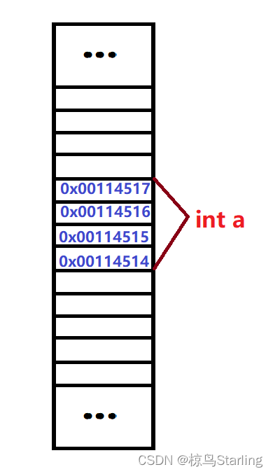
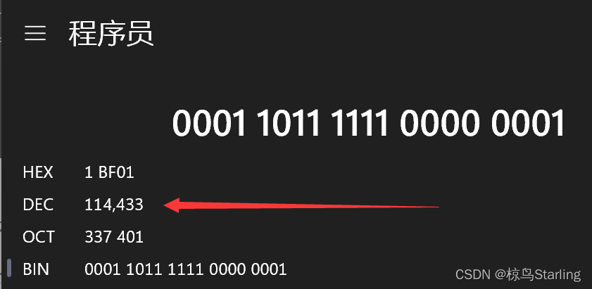
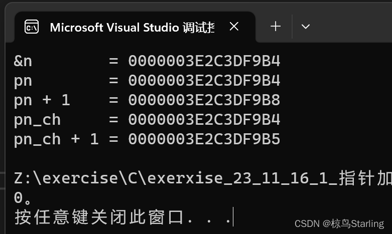
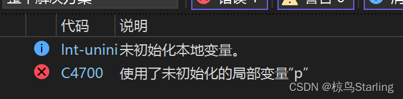
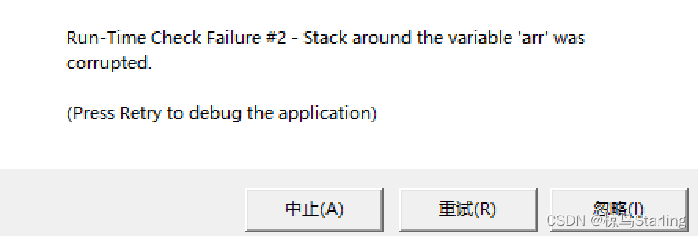

该系列为本人的学习笔记，主要由本人整理书写而成。部分内容来自教材、视频课程等，不能保证完全原创性。
萌新的学习笔记，写错了恳请斧正。
# 指针是什么
# 内存与地址
CPU 在处理数据时，需要的数据在内存中存储，那么 CPU 是如何在内存中高速的读取数据的呢？难道是把内存的每一个位置都接一根线到 CPU 上单独控制吗？那显然很扯。其实，CPU 是通过有限的几根地址总线来访问特定的内存空间的。每一小片内存 (一个字节大小) 都有自己的地址，相当于 “门牌号”, 而地址总线传送的就是这个 “门牌号”。
在 32 位系统 (x86 系统属于 32 位系统) 中，每一个地址由 32 个二进制位构成，也就对应着 32 根地址总线。而在 64 位系统中，每一个地址由 64 个二进制位构成，有 64 根地址总线。
而指针，就是地址的另一种说法，也就是内存单元的编号。
# 取地址操作符 (&)
在 C 语言中，创建变量其实就是向内存申请一片空间。而取地址操作符就是用来获取变量所申请的内存空间的最低地址。为什么说是最低地址呢？我们举个例子:
如果我们创建一个 int 类型的变量 a, 我们知道 int 类型每一个变量占用 4 个字节。又因为栈区内存每一个存储类型之内由低向高存储，我们可以画出如下示意图 (里面的具体地址只是举个例子):

这里 int a 的第一个字节位置的地址是 0x00114514, 那么如果我们打印 & a 就会打印出 00114514 (地址一般以十六进制打印):
printf("%p", &a);
注意， 打印指针 (地址) 时，格式控制字符应该是 % p (指针类型)
# 指针变量
我们现在用取地址操作符把地址取出来了，那我们总不能每次要用地址都重新取一次地址啊，而且有时我们想对地址做一些更复杂的操作。所以，C 语言也有一种指针变量，可以将指针存储在其中。比如:
int main() | |
{ | |
int a = 0; | |
int* pa = &a; | |
return 0; | |
} |
这里就是将 a 的地址取出来放在了指针变量 pa 之中。
那么指针变量是如何定义的呢，前面的 int * 是什么意思呢？
其实 int * 就是指向 int 类型的指针的类型。同理指向 char 类型的指针属于 char * 类型、指向 long [90] 类型的指针就属于 long (*)[90] 类型。这里星号就是用于说明定义的变量是一个指针。
注意：星号只要在变量名和指向类型之间即可，下面几种写法都行:
那么这些不同类型的指针究竟有什么区别呢？难道是长度不一样吗？
当然不是，我们上面提到 32 位系统的地址长度就是 32 位、64 位系统的地址长度就是 64 位。而指针就是地址，所以指针类型的长度只与系统环境有关，与类型无关。
那为什么要分这么多不同类型的指针呢？全用一个不就完了吗？
不急，下面讲完解引用答案自然就出来了。
# 解引用操作符 (*)
我们已经通过取地址操作符取出了地址，又把地址存在了指针变量中，那我们究竟要如何使用取出来的地址呢？这就需要解引用操作符 (*)。
这里的星号与定义指针变量的星号意义不同，上面那个是对指针变量类型的说明，而这个则是用来解引用的。
解引用，顾名思义，就是通过对应的地址找回对应的一片内存空间 (找到对应的变量)
我们看一个例子:
#include <stdio.h> | |
int main() | |
{ | |
int a = 0; | |
int* pa = &a; | |
*pa = 1; | |
printf("%d", a); | |
} |
这段代码最终输出的结果是 1。这其实很好理解，我们把 a 的地址存放到了 int * 类型的指针变量 pa 中，又解引用 pa 找到了用来 a 所在的内存空间，并将其修改为 1。所以最终打印出来的就是被修改了的 a。
我们知道 a 的地址其实是 int 类型 a 的第一个字节的地址，而 a 一共占 4 个字节。那么解引用操作是如何在只知道第一个字节地址的情况下修改后面对应数量的字节的呢？
这就是指针变量类型的作用了。** 指针变量的类型其实就规定了指针变量在解引用时，解引用操作符拥有对多大内存空间修改的权限。** 例如 int * 类型的指针变量解引用时最多访问 4 个字节的数据，int (*)[100] 类型的可以访问 400 个字节的数据，而 char * 只能访问一个字节。
要更深入的理解一下我们可以看看这一段代码:
#include <stdio.h> | |
int main() | |
{ | |
int a = 114514; | |
char* pa_ch = (char*)&a; | |
*pa_ch = 1; | |
printf("%d", a); | |
} |
上方的输出结果其实是 114433, 为什么呢？
int 类型 114514 对应的是二进制是 00000000 00000001 10111111 01010010
而 char * 类型的指针只有对其第一个字节 (是 01010010) 的访问权限，将其修改为了 char 类型 1 所对应的二进制 00000001, 总体变成 00000000 00000001 10111111 00000001, 而这对应着十进制的 114433。

# 指针与整数的加减运算
看个例子:
#include <stdio.h> | |
int main() | |
{ | |
int n = 6; | |
int* pn = &n; | |
char* pn_ch = (char*)&n; | |
printf("&n = %p\n", &n); | |
printf("pn = %p\n", pn); | |
printf("pn + 1 = %p\n", pn + 1); | |
printf("pn_ch = %p\n", pn_ch); | |
printf("pn_ch + 1 = %p\n", pn_ch + 1); | |
return 0; | |
} |
其运行结果如下:

可以看到 int * 类型的指针变量加一时一次跳过 4 个字节，而 char * 一次跳过 1 个字节，这与其指向的数据类型的长度一致。
所以说指针类型也决定了指针向前向后走一步的跨度有多大。
# void * 类型的指针变量
有一种特殊类型的指针变量，就是 void * 指针变量，也被称为泛型指针变量 (无具体类型的指针变量)
这类指针的特点是可以接受各种类型的指针，但是不能直接进行解引用与加减整数的运算
- 一般的指针变量如果接受一个不同类型的指针，编译器就会报错，只能强制类型转换后再赋值
int a = 0; | |
char b = 0; | |
int* p1 = &a; //ok | |
int* p2 = &b; //error | |
int* p3 = (int*)&b; //ok | |
void* p4 = &b; //ok |
- 如果对泛型指针直接进行运算也会报错
int a = 0; | |
void* p = &a; | |
printf("%d", *p); //error | |
printf("%p", p + 1); //error | |
printf("%p", p - 1); //error |
那泛型指针岂不是没有用的废物？不是的。
泛型指针常用于函数的参数，当一个函数不能确定接收的究竟是哪一种指针时，可以使用泛型指针作为参数接受地址来实现泛型编程的效果 (后面几篇笔记会具体讲)(比如 qsort)
# const 修饰指针
# const 修饰常规变量
const 是 C 语言的一个关键字。
变量，顾名思义，是可变化的量。但有些时候，我们想给变量加一些限制，让它不再变化，成为一个不能直接修改的值。这个时候，就需要用到 const, 如下:
#include <stdio.h> | |
int main() | |
{ | |
int m = 0; | |
m = 1; | |
const int n = 0; | |
n = 1; //error | |
return 0; | |
} |
当程序运行到上述位置时，就会报错。因为 n 已经被限制，不能直接修改了。
但 const 修饰的变量终究还是个变量，而不是常量。
这体现在我们可以绕个弯来间接的修改其值，如下:
#include <stdio.h> | |
int main() | |
{ | |
const int n = 0; | |
int*p = &n; | |
*p = 1; | |
printf("%d", n); | |
return 0; | |
} |
上述程序的输出为 1, 也就是说被 const 修饰的变量 n 被修改了
p 直接指向的 n 的地址，解引用后直接指向了 n 对应的内存空间
跳过了对变量 n 本身的赋值直接修改了对应的内存，完成了 “偷袭”
那我们如果想要 n 即使有了对应的指针也无法被修改该怎么办呢？
那就需要对指针也进行 const 修饰。
# const 修饰指针变量
int n = 0; | |
@ int @ * @ p = &n; |
上面 3 个 @的位置都可以放 const
const 修饰指针变量时应该把 const 放在不同位置有什么区别呢？
我们来分别看看:
# 1. 不加 const
int n = 0; | |
int m = 0; | |
int* p = &n; | |
*p = 1; //ok | |
p = &m; //ok |
此时通过指针间接修改数据可行、修改指针指向可行
# 2.const 在指向类型前
int n = 0; | |
int m = 0; | |
const int* p = &n; | |
*p = 1; //error | |
p = &m; //ok |
此时通过指针间接修改数据不可行、修改指针指向可行
# 3.const 在指向类型后星号前
int n = 0; | |
int m = 0; | |
int const * p = &n; | |
*p = 1; //error | |
p = &m; //ok |
此时通过指针间接修改数据不可行、修改指针指向可行
# 4.const 在星号后指针变量名前
int n = 0; | |
int m = 0; | |
int* const p = &n; | |
*p = 1; //ok | |
p = &m; //error |
此时通过指针间接修改数据可行、修改指针指向不可行
# 总结
当 const 位于星号前，const 限制了对指针所指向的空间的修改
当 const 位于星号后，const 限制了对指针本身指向何处的修改
注：以上两种可以一起限制。
# 指针运算
# 指针与整数的加减运算
上面讲了，这里再展开一下
我们知道数组在内存中是连续存放的，所以只要知道第一个元素的地址，就能顺藤摸瓜的找到后面的所有元素。如下:
#include <stdio.h> | |
int main() | |
{ | |
int arr[10] = {1,2,3,4,5,6,7,8,9,10}; | |
int *p = &arr[0]; | |
int i = 0; | |
int len = sizeof(arr)/sizeof(arr[0]); | |
for(i = 0; i < len; i++) | |
{ | |
printf("%d ", *(p+i)); | |
} | |
return 0; | |
} |
重要：数组名本身就是数组的首元素的地址！！！
# 指针与指针的减法运算
指针 A 加一个整数得到指针 B, 那么指针 B 减去指针 A 也就自然会得到一个整数
这个整数也就反映了两指针之间的间隔
利用指针间减法我们也可以完成计算字符串长度的操作，如下:
#include <stdio.h> | |
int strlen(char* str) | |
{ | |
char* p = str; | |
while (*p) | |
p++; | |
return p - str; | |
} | |
int main() | |
{ | |
char str[1000] = { 0 }; | |
scanf("%[^\n]", str); | |
printf("%d", strlen(str)); | |
return 0; | |
} |
# 指针的关系运算 (比大小)
就是单纯的内存地址高低的比较，使用如下:
#include <stdio.h> | |
int main() | |
{ | |
int arr[10] = {1,2,3,4,5,6,7,8,9,10}; | |
int* p = &arr[0]; | |
int i = 0; | |
int sz = sizeof(arr) / sizeof(arr[0]); | |
while (p < arr + sz) // 指针大小比较 | |
{ | |
printf("%d ", *p); | |
p++; | |
} | |
return 0; | |
} |
# 野指针
在很透彻的学完指针前，我们如果自己尝试各种使用指针的操作很有可能会遇到各种内存报错
这是因为我们的代码中出现了野指针
# 野指针成因
# 1. 创建指针时内存没有分配成功
这等写到动态内存分配的时候再谈
# 2. 创建指针时没有初始化
指针在创建时必须初始化！！！
#include <stdio.h> | |
int main() | |
{ | |
int arr[10] = { 0 }; | |
int* p = &arr[0]; | |
int i = 0; | |
for (i = 0; i <= 11; i++) | |
{ | |
// 当指针指向的范围超出数组 arr 的范围时，p 就是野指针 | |
*(p++) = i; | |
} | |
return 0; | |
} |
# 
# 3. 指针越界访问
#include <stdio.h> | |
int main() | |
{ | |
int arr[10] = { 0 }; | |
int* p = &arr[0]; | |
int i = 0; | |
for (i = 0; i <= 11; i++) | |
{ | |
// 当指针指向的范围超出数组 arr 的范围时，p 就是野指针 | |
*(p++) = i; | |
} | |
return 0; | |
} |

# 4. 指针指向的内存已经释放却仍然使用
#include <stdio.h> | |
int* test() | |
{ | |
int n = 100; | |
return &n; | |
} | |
int main() | |
{ | |
int* p = test(); | |
printf("%d\n", *p); | |
return 0; | |
} |
这不一定会报错，因为 n 的内存空间虽然已经释放，但暂时还没有被其他内容覆盖。
但是在较大的程序中这么写就大概率出问题了，所以不要这么写。
# 5. 内存泄露
内存泄露就是申请了一块内存空间，使用完没有释放。
一般是随着程序运行时间增长，占用内存增多，最后虚拟内存空间用尽，程序奔溃
具体的以后再说。
# 如何避免野指针
# 1. 记得初始化，哪怕是初始化为 NULL
如果不知道指针目前应该指向哪，但是需要创建指针，那就初始化为 NULL。
NULL 是 C 语言的一个标识符常量，其值为零，在 C 语言中就是 0 地址。
#ifdef __cplusplus | |
#define NULL 0 | |
#else | |
#define NULL ((void *)0) | |
#endif |
使用 NULL 初始化指针就是将其指向 0 地址， 这个地址不能使用 (会报错)。
# 2. 提防越界
一个程序向内存申请了哪些空间，通过指针也就只能访问哪些空间，不能超出范围访问，超出了就是越界访问。
# 3. 指针不再使用时即时置 NULL
当指针变量指向一块区域的时候，我们可以通过指针访问该区域，后期不再使用这个指针访问空间的时候，我们把该指针置为 NULL。
# 4. 指针使用前检查一下是否有效
只要是 NULL 指针就不去访问，同时使用指针之前应判断指针是否为 NULL。